File list
This special page shows all uploaded files.
{kind=link}
{kind=link}
| Date | Name | Thumbnail | Size | User | Description | Versions |
|---|---|---|---|---|---|---|
| 11:23, 15 April 2016 | 2000.png (file) | 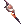 | 397 bytes | Mayo | 1 | |
| 09:36, 3 July 2016 | 20016.png (file) | 11 KB | Lunch | 1 | ||
| 11:23, 15 April 2016 | 2004.png (file) | 357 bytes | Mayo | 1 | ||
| 12:20, 27 October 2017 | 20070.png (file) | 14 KB | Tokeiburu | 1 | ||
| 09:43, 6 June 2016 | 20082.png (file) | 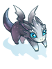 | 9 KB | Mayo | 1 | |
| 15:00, 3 August 2017 | 20112.png (file) |  |
9 KB | Tokeiburu | 1 | |
| 19:14, 14 April 2016 | 2016.png (file) | 318 bytes | Mayo | 1 | ||
| 16:08, 28 February 2019 | 2018error.jpg (file) | 21 KB | Panic | 1 | ||
| 11:23, 15 April 2016 | 2022.png (file) | 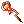 | 334 bytes | Mayo | 1 | |
| 11:24, 15 April 2016 | 2023.png (file) |  |
272 bytes | Mayo | 1 | |
| 16:09, 8 March 2019 | 2024.gif (file) | 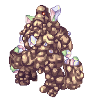 | 45 KB | Alice | 1 | |
| 07:05, 27 January 2017 | 2024 infinity two handed staff.png (file) | 11 KB | Renata | 1 | ||
| 08:19, 18 October 2016 | 2025.png (file) | 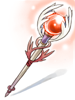 | 11 KB | Halves | 1 | |
| 03:56, 27 March 2016 | 20268 costume sleeping eclipse family.png (file) | 590 bytes | Renata | 1 | ||
| 03:56, 27 March 2016 | 20298 costume happy lunatic hanging ear.png (file) | 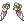 | 499 bytes | Renata | 1 | |
| 13:14, 28 April 2017 | 20300.png (file) | 9 KB | Renata | 1 | ||
| 13:14, 28 April 2017 | 20399.png (file) | 12 KB | Renata | 1 | ||
| 06:10, 11 August 2019 | 20455.png (file) | 6 KB | Nova | 1 | ||
| 21:43, 20 March 2017 | 2068.gif (file) | 33 KB | AloeLeaflet | 1 | ||
| 21:12, 20 March 2017 | 2069.gif (file) | 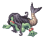 | 4 KB | AloeLeaflet | 1 | |
| 20:18, 17 May 2016 | 20718.png (file) | 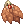 | 562 bytes | Mayo | 1 | |
| 07:43, 10 June 2016 | 20732 supp part VIT.png (file) | 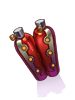 | 8 KB | Renata | 1 | |
| 07:45, 10 June 2016 | 20733 reinforced engine.png (file) | 12 KB | Renata | 1 | ||
| 20:17, 17 May 2016 | 20743.png (file) | 627 bytes | Mayo | 1 | ||
| 08:05, 6 April 2016 | 20743 airship's cloak.png (file) |  |
10 KB | Renata | 1 | |
| 19:49, 14 April 2016 | 20744.png (file) | 800 bytes | Mayo | 1 | ||
| 08:07, 6 April 2016 | 20744 felrock's cloak.png (file) |  |
11 KB | Renata | 1 | |
| 09:36, 3 July 2016 | 20756.png (file) | 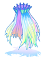 | 11 KB | Lunch | 1 | |
| 17:29, 15 July 2018 | 20773.png (file) | 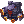 | 672 bytes | Colours | 1 | |
| 07:23, 27 January 2017 | 20779 rift manteau.png (file) | 7 KB | Renata | 1 | ||
| 15:59, 8 March 2019 | 2083.gif (file) | 6 KB | Alice | 1 | ||
| 16:04, 8 March 2019 | 2084.gif (file) | 6 KB | Alice | 1 | ||
| 16:05, 8 March 2019 | 2085.gif (file) | 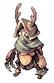 | 10 KB | Alice | 1 | |
| 15:09, 12 September 2018 | 20856.png (file) | 14 KB | I Know To Write | YSF Manteau#Werner's Laboratory | 1 | |
| 16:05, 8 March 2019 | 2086.gif (file) | 16 KB | Alice | 1 | ||
| 16:10, 8 March 2019 | 2092.gif (file) | 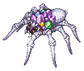 | 14 KB | Alice | 1 | |
| 06:23, 14 May 2019 | 20934.png (file) |  |
556 bytes | Colours | 2 | |
| 01:37, 7 May 2019 | 20935.png (file) | 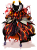 | 15 KB | I Know To Write | 1 | |
| 02:24, 7 May 2019 | 20936.png (file) | 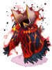 | 14 KB | I Know To Write | 1 | |
| 03:05, 7 May 2019 | 20937.png (file) | 14 KB | I Know To Write | 1 | ||
| 16:06, 7 March 2020 | 20940.png (file) | 10 KB | I Know To Write | 1 | ||
| 03:55, 6 April 2016 | 21010 ES Slasher Sword.png (file) | 347 bytes | Renata | 1 | ||
| 00:55, 12 April 2016 | 21010 ES Slasher Sword HQ.png (file) | 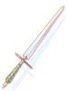 | 5 KB | Renata | 1 | |
| 07:49, 10 June 2016 | 21011 gigantic blade.png (file) | 9 KB | Renata | 1 | ||
| 07:09, 27 January 2017 | 21014 infinity two handed sword.png (file) | 9 KB | Renata | 1 | ||
| 08:20, 18 October 2016 | 21015.png (file) | 13 KB | Halves | 1 | ||
| 11:08, 24 May 2016 | 2115.png (file) | 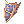 | 442 bytes | Mayo | 1 | |
| 16:05, 8 March 2019 | 2132.gif (file) | 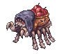 | 11 KB | Alice | 1 | |
| 16:06, 8 March 2019 | 2133.gif (file) | 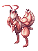 | 7 KB | Alice | 1 | |
| 16:06, 8 March 2019 | 2134.gif (file) | 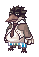 | 2 KB | Alice | 1 |
{kind=link}
{kind=link}
{kind=link}
{kind=link}
{kind=link}
{kind=link}
{kind=link}
{kind=link}
{kind=link}
{kind=link}
{kind=link}
{kind=link}
{kind=link}
{kind=link}
{kind=link}
{kind=link}
{kind=link}
{kind=link}
{kind=link}
{kind=link}
{kind=link}
{kind=link}
{kind=link}
{kind=link}
{kind=link}
{kind=link}
{kind=link}
{kind=link}
{kind=link}
{kind=link}
{kind=link}
{kind=link}
{kind=link}
{kind=link}
{kind=link}
{kind=link}
{kind=link}
{kind=link}
{kind=link}
{kind=link}